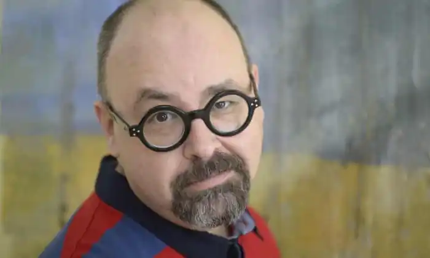

Карлос Руїс Сафон народився 25 вересня 1964 року в Барселоні, Іспанія. Навчався в Єзуїтському коледжі св. Ігнасіо, після закінчення якого почав вивчати наукову інформатику. Під час першого року навчання йому запропонували роботу у сфері реклами і, таким чином, він займав посаду креативного директора в одній із найвпливовіших агенцій Барселони, проте 1992 вирішив залишити роботу на користь своєї літературної діяльності.
В одному зі своїх інтерв'ю Карлос Руїс Сафон каже, що зрозумів своє покликання стати письменником ще у дуже юному віці, але не знає, як саме так трапилось, адже його батьки не займалися письменницькою діяльністю. Його матір була домогосподаркою, а батько — досить успішним страховим агентом. Однак, як стверджував сам письменник: "Світ книг та читання відігравав важливу роль у їхній сім'ї".
Свою письменницьку кар'єру розпочав з написання підліткової літератури. 1993 року світ побачив перший роман письменника — "Принц туману", який мав чималий успіх та отримав літературну премію "Edebé" в номінації "Підліткова проза". Карлос Руїс Сафон, який ще з дитинства захоплювався кінематографією та Лос-Анджелесом, вирішив використати грошову частину премії на здійснення своєї дитячої мрії, і 1993 року переїхав до США, де спочатку працював сценаристом на телебаченні, але одночасно працював над своїми новими книгами. Повернувся у Барселону аж 2006 року. Наступні дві книги — романи "Опівнічний палац" (1994) та "Вересневі вогні" (1995) разом із дебютним романом письменника "Принц туману" (1993) утворюють книжкову серію "Трилогія туману". 1999 року світ побачив роман "Марина", який також розрахований на юних читачів. У січні 2001 року вийшов перший роман-бестселер, який націлений на дорослу аудиторії — "Тінь вітру". 2000 року книга стала фіналістом премії Фернандо Ларі. Не зважаючи на те, що перемогу здобув роман "Довга тиша" Анхелес Касо, іспанське видавництво "Планета" окрім твору лауреата опублікувало й книгу Сафона, що стало прямою заслугою Теренчі Мойкса, який входив до складу журі цього літературного конкурсу та наполягав на такому рішені. Книга перекладена багатьма мовами світу. Попри нелегкий шлях на батьківщині, роман став одним із найбільших іспанських бестселерів, який розійшовся накладом у 10 млн примірників по всьому світу. Також Сафону надходили численні пропозиції для кіноадаптації, але письменник відмовився надавати права на екранізацію книги. В одному із своїх інтерв'ю, він стверджує, що не хоче жодних грошей та вважає, що це стане практично "зрадою", адже "неможливо створити кращий фільм, аніж той, який можна побачити, почавши читати роман". Другою книгою для дорослих став роман "Гра Янгола", який побачив світ 2008 року. Зважаючи на успіх попередньої книги, першопочатковий тираж нової книги становив мільйон примірників. Також відбулася безпрецедентна медіа презентація в Барселоні, де брали участь 350 гостей, 150 журналістів, 15 телекамер та 40 ведучих. Книга відразу стала бестселером, зважаючи на те, що лише в одній Каталонії в перший тиждень вдалося продати 250,000 тисяч примірників, а на Георгів день, під час книжкового фестивалю в Барселоні, 1400 читачів вишукувались у чергу за книгою з підписом Сафона. Обидва романи входять до тетралогії "Цвинтар забутих книжок", яку Карлос Руїс Сафон присвятив своєму рідному місту. Третя книга серії, яку називають більш оптимістичною та поразницькою аніж попередній роман, отримала назву "В'язень Неба" та вийшла 2011 року. 2012 року світ побачило оповідання "Вогняна троянда", яке займає центральне місце серед романів серії та розповідає про події, що відбуваються у часи іспанської інквізиції п'ятнадцятого сторіччя. Четвертий та кінцевий роман циклу "Лабіринт духів" опублікований 17 листопада 2016 року. Помер 19 червня 2020 року від колоректального раку в Лос-Анжелесі.